산업위생관리기사 (2003-03-16 기출문제)
1과목: 산업위생학개론
1. 피로의 종류 및 증상에 관한 설명으로 적합하지 않는 것은?
- 피로는 정신적기능과 신체적기능의 저하가 통합된 생체반응이다.
- 과로는 피로상태가 축적된 상태로서 단기간의 휴식으로 회복될 수 없는 병적상태다.
- 피로는 자각적인 피로감과 더불어 점차 기능적인 저하가 일어나게 된다.
- 산업피로는 생리학적 기능변동으로 인하여 생긴다고 생각할 수 있다.
(정답률: 54%)

2. 바람직한 교대제에 관한 설명으로 알맞지 않는 것은?
- 야근근무의 연속은 4-5일 정도가 좋다.
- 야근 후 다음반으로 가는 간격은 최저 48시간을 가지도록 한다.
- 평균 주 작업시간은 40시간을 기준으로 갑반-을반-병반으로 순환하게 된다.
- 2교대면 최저 3조의 정원을 3교대면 4조 편성으로 한다.
(정답률: 80%)
3. 허용농도(TLV) 적용상의 주의사항과 거리가 먼 것은?
- 기존의 질병이나 육체적 조건을 판단하기 위한 척도로 사용될 수 없다.
- 안전농도와 위험농도를 정확히 구분하는 경계선이 아니다.
- 산업위생전문가뿐아니라 일반인에 의하여 적용될 수 있어야 한다.
- 24시간 노출 또는 정상 작업시간을 초과한 노출에 대한 독성평가에는 적용될 수 없다.
(정답률: 55%)
4. 탄광업에서 재해가 발생되는 경우에 다음의 위험조건들 중에서 가장 발생빈도를 높게 만드는 재해원인은?
- 시설결함
- 환경위험
- 위험한 작업방법 및 공정
- 위험방지의 미비
(정답률: 31%)
5. NIOSH에서 제안한 중량물 취급작업의 권고치 중 감시기준(AL)을 구하기 위한 식에 포함된 요소의 내용으로 틀린 것은?
- 대상 물체의 수평거리
- 대상 물체의 이동거리
- 대상 물체의 무게
- 중량물 취급작업의 빈도
(정답률: 알수없음)
6. 피로의 주관적 측정을 위해 사용하는 측정방법으로 적절한 것은?
- MMI
- KMI
- CMI
- AMI
(정답률: 80%)
7. 산업재해의 지표중에서 도수율을 맞게 적은 것은?(오류 신고가 접수된 문제입니다. 반드시 정답과 해설을 확인하시기 바랍니다.)
- 일정기간의 재해자수/일정기간중 연근로시간수 × 1,000,000
- 일정기간의 재해건수/일정기간의 연근로시간수 × 1,000
- 일정기간중 손실일수/일정기간중 연근로시간수 × 1,000,000
- 일정기간중 재해건수/일정기간의 연평균근로자수 × 1,000
(정답률: 34%)
8. 직업과 질병의 상관관계를 예를 들었고 광산에서의 납중독을 보고한 사람은?
- Percival Pott
- Larigo
- Paracelsus
- Hippocrates
(정답률: 50%)
9. 최근 우리나라에서 특수건강진단을 통해 가장 많이 발생되고 있는 직업병 유소견자는?
- 진폐증 유소견자
- 유기용제중독 유소견자
- 소음성 난청 유소견자
- 피부염 유소견자
(정답률: 54%)
10. 고온에 순응된 사람들이 고온에 계속 노출되었을 때 나타나는 현상은?
- 심장박동 증가
- 땀의 분비 속도 증가
- 직장온도 증가
- 피부온도 증가
(정답률: 38%)
11. 산업안전보건법에서 규정한 산업위생지도사 업무와 가장 거리가 먼 것은?
- 작업환경의 평가 및 개선 지도
- 작업환경개선과 관련된 계획서 및 보고서의 작성
- 보건관리 대행업무
- 산업위생에 관한 조사 · 연구
(정답률: 60%)
12. 시대별 외국의 산업위생 역사에서 인물과 업적이 틀리게 연결된 것은?
- Pliny the Elder - 아연, 황의 유해성 주장 : 먼지방지용 마스크로 동물의 방광 사용 권장
- Ulrich Ellenbog - 직업병과 위생에 관한 교육용 팜플렛 발간
- Georgius Agricola - 광산 환기와 마스크 사용을 권장함(먼지에 의한 규폐증 기록)
- Sir George Baker - 유해물질 노출과 질병과의 관계규명
(정답률: 42%)
13. 작업대사율에 관한 설명중 틀린 것은?
- 중등작업은 지적 활동을 포함 한다.
- 중작업은 작업대사율이 4~7일 때이며 수시로 휴식 시간을 요한다.
- 강작업의 RMR은 2~4일 때이며 실동률은 76~67% 범위이다.
- RMR 4를 계속작업의 한계로 보며 이를 넘으면 수시로 휴식시간을 부여하여야 한다.
(정답률: 25%)
14. 온도 25℃, 대기압 760mmHg에서 분자량이 78인 벤젠이 공기 중에 10ppm 존재하고 있다면 이는 몇 mg/m3인가?
- 24
- 32
- 35
- 50
(정답률: 73%)
15. 다음 중에서 피로물질이라고 할 수 없는 것은?
- 크레아틴
- 젖산
- 글리코겐
- 초성포도당
(정답률: 40%)
16. 우리나라 methanol의 노출기준은 200ppm이다. 잔업으로 인하여 작업시간이 8시간에서 10시간으로 늘었다면 이 기준치는 몇 ppm으로 보정해 주어야 하는가? (단, Brief와 Scala의 보정방법을 사용하시오.)
- 120 ppm
- 140 ppm
- 160 ppm
- 180 ppm
(정답률: 47%)
17. 다음 중 생물학적 노출지수(BEIs)를 이용하여 유해물질의 노출 및 흡수정도를 평가하기 위한 측정시료로 가장 거리가 먼 것은?
- 소변(urime)
- 호기(exhaled air)
- 혈액(Blood)
- 피부(skin)
(정답률: 83%)
18. 주로 앉아서 일하는 사람에게서 발생되는 요통장애를 감소시키기 위한 방법으로 적절치 못한 것은?
- 방석등을 이용하여 척추의 곡선을 유지하지 않는다.
- 다리가 편안하도록 의자의 높이를 조절하고, 상체를 반듯이 펴고 허리를 약간 뒤로 젖힌다.
- 차나 트랙터에서 내릴 때 뛰어내리지 않는다.
- 차나 트랙터에서 타고 내릴 때 몸을 회전하지 않는다.
(정답률: 59%)
19. 근육이 운동을 시작하면 필요한 에너지를 여러 가지 방법에 의하여 공급받게 되는데, 가장 먼저 에너지를 공급하기 시작하는 것은 무엇인가?
- 아데노신 삼인산(ATP)
- 크레아틴 인산(CP)
- 글리코겐
- 포도당
(정답률: 73%)
20. 젊은 근로자의 약한 쪽 손의 힘은 평균 45kp이다. 이러한 근로자가 무게 10kg인 상자를 두 손으로 들어올릴 경우에 한 손의 작업강도는? (단, 1kp는 질량 1kg을 중력의 크기로 당기는 힘)
- 5.1%
- 11.1%
- 15.3%
- 20.1%
(정답률: 27%)
2과목: 작업위생측정 및 평가
21. NaOH 2g을 1000㎖의 증류수에 용해하여 0.1N-HCl용액으로 중화적정시 소요되는 HCl용액의 용량은?
- 200㎖
- 300㎖
- 400㎖
- 500㎖
(정답률: 17%)
22. 작업환경 공기 중에 TLV가 750ppm인 아세톤이 500ppm, TLV가 200ppm인 부틸아세테이트가 180ppm,TLV가 200ppm인 메틸에틸케톤이 150ppm으로 측정되었다. 이들이 상가작용을 일으킨다고 가정할 때 허용기준의 초과도는?
- 1.3
- 1.8
- 2.3
- 2.8
(정답률: 알수없음)
23. 활성탄관(charcoal tubes)을 사용하여 포집하기에 가장 부적합한 오염물질은?
- 염소화 탄화수소류
- 에스테르류
- 방향족 아민류
- 알코올류
(정답률: 20%)
24. 작업장의 기본적인 특성을 파악하는 예비조사의 목적과 가장 거리가 먼 내용은?
- 동일(유사)노출그룹설정
- 발생되는 유해인자 특성조사
- 작업장과 공정의 특성파악
- 노출기준 초과여부 판정
(정답률: 64%)
25. 흡광광도법에 관한 설명으로 알맞지 않은 것은?
- 광원에서 나오는 빛을 단색화장치에 의하여 넓은 파장 범위의 빛을 선택하고 있다.
- 선택된 파장의 빛을 시료액 층으로 통과시킨 후흡광도를 측정하여 농도를 구한다.
- 분석의 기초가 되는 법칙은 램버어트-비어의 법칙이다.
- 표준액에 대한 흡광도와 농도의 관계를 구한 후 시료의 흡광도를 측정, 농도를 구한다.
(정답률: 47%)
26. 어떤 작업장에서 일산화탄소(CO)농도를 측정한 결과 16ppm, 9ppm, 6ppm, 4ppm, 3ppm, 6ppm 으로 나타 났을 때 기하 평균농도는?
- 5.2ppm
- 6.3ppm
- 7.3ppm
- 8.5ppm
(정답률: 73%)
27. 어느 작업장에서 Low volume air sampler 를 사용 하여 분진농도를 측정하였다. sampling, 전후의 filter 무게는 각각 21.6㎎ , 130.4㎎ 이었으며 pump의 유량은 4.24Lpm이었고, 480분 동안 시료를 채취하였다면 분진의 농도는?
- 약 38 ㎎/m3
- 약 44 ㎎/m3
- 약 53 ㎎/m3
- 약 67 ㎎/m3
(정답률: 58%)
28. 시료채취시간은 작업환경 측정에서 매우 중요한 요소이며 단시간, 장시간, 총작업시간, 작업시간의 일부분등 여러 종류의 시료채취 방법이 있다. 다음중 가장 바람직한 시료채취 방법은?
- 단시간 시료채취(Grab Samples)
- 총작업시간 동안 여러개의 시료를 계속하여 채취하는 방법(Full Period,consecutive samples)
- 총작업 시간동안 1개를 채취하는 방법(Full period, single samples)
- 작업시간의 일부분 동안 여러개의 시료를 채취 하는 방법(Partial period,consecutive samples)
(정답률: 47%)
29. 작업장 공기중 벤젠증기를 활성탄관 흡착제로 채취할때 작업장 공기중 페놀이 함께 다량 존재하면 벤젠증기를 효율적으로 채취할 수 없게 되는 이유로 타당한 것은?
- 벤젠과 흡착제와의 결합자리를 페놀이 우선적으로 차지하기 때문
- 실리카겔 흡착제가 벤젠과 페놀이 반응할 수 있는 장소로 이용되어 부산물을 생성하기 때문
- 페놀이 실리카겔과 벤젠의 결합을 증가시키는 다리 역할을 하여 분석시 벤젠의 탈착을 어렵게 하기 때문
- 벤젠과 페놀이 공기내에서 서로 반응을 하여 벤젠의 일부가 손실되기 때문
(정답률: 36%)
30. 납을 sampling하여 실험실에서 분석한 결과 50㎍/m3 이었다. 시료 채취는 480분 했고 이때 펌프의 유량은 2.0liter/min 이었다. 그런데 실제유량은 2.4 liter/min으로 나타났다. 이 작업장의 실제 납 농도는?
- 35.5 ㎍/m3
- 41.7 ㎍/m3
- 45.3 ㎍/m3
- 48.3 ㎍/m3
(정답률: 37%)
31. 석면분진 측정방법중 공기중 석면시료를 가장 정확하게 분석할 수 있고 석면의 성분 분석이 가능하며 매우 가는 섬유도 관찰가능하나 값이 비싸고 분석시간이 많이 소요되는 것은?
- 위상차현미경법
- 편광현미경법
- X-선 회절법
- 전자현미경법
(정답률: 73%)
32. 어느 작업장의 Acetone 의 농도를 측정 평가한 결과 1시간 350ppm, 3시간 200ppm, 4시간 150ppm에 폭로된 결과를 얻었다. TWA(시간가중평균치)를 계산 하면?
- 176 ppm
- 184 ppm
- 194 ppm
- 212 ppm
(정답률: 50%)
33. 공기중 벤젠농도를 측정한 결과 10㎎/m3으로 검출되었다. 현재, 공기의 온도가 25℃, 기압은 1atm이고 벤젠의 분자량이 78이라면 공기중 농도는 몇ppm인가?
- 11.8ppm
- 5.9ppm
- 3.1ppm
- 2.2ppm
(정답률: 59%)
34. 공기중에 1,2-dichloroethan(TLV = 50ppm)이 20ppm, carbon tetrachloried(TLV = 10ppm)이 5ppm, 1,2-dibromoethane(TLV = 20ppm)이 10ppm함유되어 있는 혼합물의 허용농도는? (단, 이들은 상가작용을 일으킨다고 가정)
- 20ppm
- 25ppm
- 30ppm
- 35ppm
(정답률: 64%)
35. 작업장의 입자상물질 여과포집에 사용하는 필터가 갖추어야 할 특성 중 가장 관계가 적은 것은?
- 흡습성이 적을 것
- 흡인시 압력손실이 적을 것
- 포집대상 입자의 입도분포에 대하여 포집효율이 높을 것
- 100℃ 이상의 고온에 견딜 수 있을 것
(정답률: 46%)
36. 작업환경에서 채취한 시료중 유해한 유기물질의 성분을 가스크로마토그래피법으로 분석하고자 한다. 분리관의 충전물질의 조건이다. 맞지 않는 것은?
- 분석대상물질을 완전히 분리하는 것이어야 한다.
- 사용온도에서 증기압이 높고 점성이 큰것이어야 한다.
- 화학적으로 안정된 성질을 가진 것이어야 한다.
- 화학적 성분이 일정한 물질이어야 한다.
(정답률: 65%)
37. 분석에서 언급되는 용어의 설명이다. 맞는 것은?
- LOD는 LOQ의 10배로 정의하기도 한다.
- LOQ는 분석결과가 신뢰성을 가질 수 있는 양이다.
- 회수율(%)=첨가량/분석량 × 100
- LOQ란 검출한계를 말한다.
(정답률: 27%)
38. 어느 작업환경에서 발생되는 소음원이 92㏈로서 4개이다. 이때의 전체소음은 어느 정도이겠는가?
- 96㏈
- 98㏈
- 100㏈
- 102㏈
(정답률: 77%)
39. 표준편차를 구하는 일반적 공식으로 가장 적절한 것은?
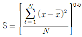
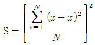
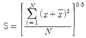
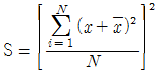
(정답률: 50%)
40. 공기중 석면을 포집하는데 적합한 여재(media)는? (단, 여과포집방법 : 현미경을 이용한 계수용 시료의 포집)
- Glass fibre filter를 사용
- PVC filter를 사용
- Mixed cellulose ester membrane filter를 사용
- Membrane filter 앞에 Glass fibre filter를 장착
(정답률: 34%)
3과목: 작업환경관리대책
41. 송풍관의 내면의 마모,부식 및 분진의 퇴적상태를 판정하기 위한 기준으로 틀린 것은?
- 전체 측정점에서 판의 두께가 설계두께의 1/4이상이 되어야 한다.
- 덕트내의 동압이 초기동압의 ± 5% 이내이어야 한다.
- 분진 등의 퇴적으로 인한 이상한 소리가 없어야 한다.
- 부식의 원인이 되는 도장 등의 손상이 없어야 한다.
(정답률: 60%)
42. 정상류 흐름에 질량보존의 원리를 적용하여 얻은 유체역학적인 기본 이론은?
- 연속방정식
- 베르누이 정리
- 보일-샬의 법칙
- 뉴톤의 점성법칙
(정답률: 10%)
43. 방독마스크에 사용되는 흡수관의 종류와 표식이 잘못된 것은?
- 유기가스용 - C, 검은색
- 일산화탄소용 - E, 빨간색
- 암모니아용 - H, 초록색
- 황화수소용 - A, 회색
(정답률: 36%)
44. 벤젠 2L 가 모두 증발하였다면 벤젠이 차지하는 부피는? (단, 벤젠의 비중은 0.88이고 분자량은 78, 21℃ 1기압)
- 176 L
- 258 L
- 325 L
- 544 L
(정답률: 30%)
45. 송풍기 평가표에 명시되어 있지 않는 항목은?
- 유량
- 브레이크 마력
- 송풍기 유압
- 송풍기 크기
(정답률: 알수없음)
46. 수증기가 발생하는 작업장의 필요환기량(Q(m3/시간))을 구하는 식으로 알맞는 것은? (단, 수증기부하량 : W(kg/시간), 급배기의 절대습도차△G(kg/kg 건기))
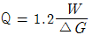
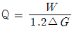
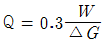
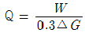
(정답률: 10%)
47. 전체환기시설을 설치하는데 필요한 기본 원칙이다. 알맞는 내용 모두를 짝지은 것은?
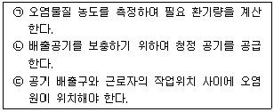
- ㉠㉡
- ㉡㉢
- ㉠㉢
- ㉠㉡㉢
(정답률: 30%)
48. 회전차 외경이 600mm인 레이디얼 송풍기의 풍량은 300m3/min, 송풍기 전압은 60mmH2O, 축동력이 0.70kW이다. 회전차 외경이 1200mm로 동종의 레이디얼 송풍기가 같은 회전수로 운전된다면 이 송풍기의 축동력은?
- 20.2 kW
- 22.4 kW
- 26.4 kW
- 28.2 kW
(정답률: 34%)
49. 송풍형 호스 마스크의 기계 송풍시 경작업을 행하는 경우 필요한 공기량은?
- 50 ℓ /min
- 150 ℓ /min
- 250 ℓ /min
- 350 ℓ /min
(정답률: 19%)
50. 제진장치의 입구 및 출구의 정압이 동시에 감소된 원인으로 가장 적절한 것은?
- 제진장치내의 분진 퇴적
- 분지관과 후드사이의 분진 퇴적
- 분지관의 시험공과 후드사이의 분진 퇴적
- 송풍기의 점검 뚜껑 열림
(정답률: 22%)
51. 귀덮개를 설명한 것 중 옳은 것은?
- 차음효과의 개인차가 적다.
- 귀덮개의 크기를 여러가지로 할 필요가 있다.
- 근로자들이 보호구를 착용하고 있는지를 쉽게 알 수 없다.
- 귀마개보다 차음효과가 적다.
(정답률: 47%)
52. 국소배기 장치의 Hood에서 가장 효과적인 것은 다음 중 어느 것인가?
- 레시버식 캐노피형
- 외부식 그리드형
- 외부식 스롯드형
- 포위식 글로브박스형
(정답률: 20%)
53. 고열 발생원에 대한 공학적 대책 방법 중 대류에 의한 열흡수 경감법이 아닌 것은?
- 방열
- 일반환기
- 국소환기
- 차열판 설치
(정답률: 36%)
54. 후드의 유입계수가 0.7이고, 속도압이 10㎜H2O 일 때 후드의 압력손실은 얼마인가?
- 4.3㎜H2O
- 7㎜H2O
- 10㎜H2O
- 15㎜H2O
(정답률: 43%)
55. 도금작업, 용접작업시 발생원에서의 후드의 적절한 제어속도는?
- 0.25 ~ 0.5m/sec
- 0.5 ~ 1.0m/sec
- 1.0 ~ 2.5m/sec
- 2.5 ~ 10.0m/sec
(정답률: 20%)
56. 흡인풍량이 200m3/min, 송풍기 유효전압이 150mmH2O, 송풍기 효율이 70%, 원동기 여유율이 1.2인 송풍기의 전동기동력은? (단, 송풍기효율과 원동기 여유율을 고려함)
- 7.0kW
- 8.4kW
- 10.1kW
- 12.6kW
(정답률: 50%)
57. 분진이나 섬유유리 등으로부터 피부를 직접 보호하기 위해 사용하는 산업용 피부보호제는?
- 수용성 물질차단 피부보호제
- 피막형성형 피부보호제
- 지용성 물질차단 피부보호제
- 광과민성 물질차단 피부보호제
(정답률: 38%)
58. 시간당 1ℓ 의 Xylene이 증발되어 공기를 오염시키는 작업장이 있다. K값은 5, 분자량은 106, 비중은 0.86, 허용기준 TLV는 100ppm이다. 이 작업장을 전체환기 시키기 위한 필요환기량 Q(m3/분)은?
- 약 160
- 약 560
- 약 5500
- 약 10,000
(정답률: 34%)
59. 작업환경의 관리원칙중 격리(Isolation) 관리방법에 속하지 않는 경우는?
- 위생보호구사용
- 방사능 물질은 원격조정이나 자동화 감시체제
- 인화성이 강한 물질 저장시 저장 탱크사이에 도랑을 파고 제방을 만든다.
- Fume 배출 드라프트의 창을 안전 유리창으로 바꾼다.
(정답률: 40%)
60. 국소배기시설 성능시험시 법적으로 갖추어야할 필수장비와 가장 거리가 먼 것은?
- 스모크테스터
- 청음기
- 절연저항계
- 수주마노메타
(정답률: 47%)
4과목: 물리적유해인자관리
61. 다음 설명에 알맞은 공장별 조명 방법은?
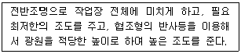
- 천정이 낮고 넓은 작업장
- 천정이 높고 좁은 작업장
- 천정이 높고 폭이 넓은 작업장
- 천정이 낮고 폭이 좁은 작업장
(정답률: 28%)
62. 감압에 따른 기포형성량에 영향을 주는 세가지 요인과 가장 거리가 먼 것은?
- 조직에 용해된 가스량
- 혈류를 변화시키는 상태
- 감압속도
- 감압환경 및 조건
(정답률: 알수없음)
63. 환경요소에 대한 저항성이 크며 저주파 차진에 좋으나 감쇠가 거의 없으며 공진시에 전달율이 매우 큰 방진재는?
- 방진고무
- Felt
- 금속스프링
- 코르크
(정답률: 54%)
64. 전리 방사선의 단위를 잘못 표시한 것은?
- R = 조사선량
- rem = rad × RBE
- rad = 흡수선량
- RBE = 방사선량
(정답률: 47%)
65. 일반소음에 대한 차음효과는 벽체의 단위표면적에 대하여 벽체의 무게가 2배 될 때마다 몇㏈씩 증가하는가? (단, 벽체무게이외에 조건은 동일)
- 4
- 6
- 8
- 10
(정답률: 84%)
66. 방음벽 설계시 유의사항 중 틀린 것은?
- 음원의 지향성과 크기에 대한 상세한 조사를 실시한다.
- 벽의 투과손실은 회전감쇠치보다 최소한 5dB이상 크게 하는 것이 바람직하다.
- 벽의 길이는 점음원일 경우 벽높이의 3배이상으로 하는 것이 바람직하다.
- 벽에 의한 실용적인 삽입손실값의 한계는 점음원일 경우 25dB정도이다.
(정답률: 42%)
67. ( )안에 알맞는 단위는?
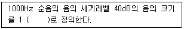
- NRN
- sone
- PWL
- phon
(정답률: 54%)
68. 청력손실이 500Hz에서 6dB, 1000Hz에서 10dB, 2000Hz에서 10dB, 4000Hz에서 20dB일 때 6분법에 의한 평균 청력손실은 얼마인가?
- 10 dB
- 11dB
- 15dB
- 20dB
(정답률: 58%)
69. 다음 중 파장이 가장 긴 선은 무엇인가?
- 자외선
- 적외선
- 가시광선
- X - 선
(정답률: 17%)
70. 소음성난청의 초기단계인 C5 - dip 현상이 가장 심하게 나타나는 주파수는?
- 10,000㎐
- 6,000㎐
- 4,000㎐
- 1,000㎐
(정답률: 73%)
71. 음압이 60(N/m2) 일 때 음압레벨(dB)은?
- 60 dB
- 80 dB
- 110 dB
- 130 dB
(정답률: 46%)
72. 조도에 대한 설명 중 틀린 내용은?
- 1촉광(candle - power)은 12.57 루멘(lumen)과 같다.
- 1루멘(lumen)은 1촉광의 광원으로부터 단위 입체각으로 나가는 광속의 단위이다.
- 1럭스(lux)는 1m2의 평면에 1푸트캔들(foot candle)의 빛이 비칠 때의 밝기를 말한다.
- 1푸트캔들(foot candle)의 10.8럭스이다.
(정답률: 50%)
73. 효과적인 자연채광을 위해 바닥면적에 대한 유효창의 면적 비율은?
- 1/2∼1/3
- 1/5∼1/6
- 1/8∼1/10
- 1/10∼1/15
(정답률: 50%)
74. 인간 공학적인 측면에서 진동공구의 무게는 몇 kg 이상 초과하지 않는 것이 좋은가?
- 3kg
- 5kg
- 10kg
- 15kg
(정답률: 64%)
75. 실효복사온도(effective radiation)의 의미로 가장 적절한 것은?
- 건구온도와 습구온도의 차
- 습구온도와 흑구온도의 차
- 습구온도와 복사온도의 차
- 흑구온도와 기온의 차
(정답률: 28%)
76. 열경련의 가장 중요한 원인은?
- 순환기 부조화
- 체온의 급격한 상승
- 체내의 수분 및 혈중의 염분손실
- 중추신경마비
(정답률: 알수없음)
77. 원자핵에서 방출되는 전자의 흐름으로 알파(α)입자보다 가볍고 속도는 10배 빠르므로 충돌할 때마다 튕겨져서 방향을 바꾼다. 외부 조사도 잠재적 위험이 되나 내부조사가 더 큰 건강상의 문제를 일으키는 방사선은?
- 베타(β)입자
- 감마(γ)입자
- 양자 입자
- 중성자 입자
(정답률: 알수없음)
78. 전리 방사선중 인체에 투과되는 양이 큰 순서대로 나열한 것은? (단, α : 알파선, β : 베타선, γ : 감마선 )
- γ ＞ β ＞α
- β ＞ γ ＞α
- α ＞ β ＞γ
- α ＞ γ ＞β
(정답률: 50%)
79. 전리방사선이 인체에 미치는 영향에 관여하는 인자와 가장 거리가 먼 것은?
- 전리작용
- 피폭선량
- 조직의 감수성
- 파장 및 진동수
(정답률: 43%)
80. 다음 중 한랭환경으로 인하여 발생되거나 악화되는 질병과 가장 거리가 먼 것은?
- 동상(Frostbite)
- Raynaud씨 병(Raynaud's disease)
- 선단자람증(Acrocyanosis)
- 케이슨병(Caisson disease)
(정답률: 62%)
5과목: 산업독성학
81. 중독증상으로 파킨슨씨(parkinson)증후와 비슷한 보행장해가 나타나고 안면의 변화 및 배근력의 저하를 가져오는 중금속은?
- 카드뮴
- 베릴륨
- 비소
- 망간
(정답률: 60%)
82. 인체의 주요 기관별로 유해물질에 의한 중독영향을 고려할 때, 각 기관과 장해를 주는 유해물질을 옳게 짝지은 것은?
- 신장 : 4 - aminodiphenyl
- 조혈기관 : 카드뮴과 수은
- 방광 : 벤젠과 TNT
- 간 : 사염화탄소(CCl4)
(정답률: 34%)
83. 방향족 탄화수소 중 급성전신중독을 유발하는데 있어서 독성이 가장 강한 것은?
- 크실렌
- 에틸벤젠
- 벤젠
- 톨루엔
(정답률: 39%)
84. 발암성물질로 알려진 Polychlorinated Biphenyl(PCB)가 과거에 가장 많이 사용되었던 업종은?
- 식품공업
- 전기공업
- 섬유공업
- 폐기물처리업
(정답률: 알수없음)
85. 도금 사업장에서 금속표면의 탈지 및 세정으로 사용되며, 간 및 신장 장해를 유발시키는 유기용제는?
- 톨루엔
- 노르말헥산
- 트리클로로 에틸렌
- 클로르포름
(정답률: 8%)
86. 벤젠이 함유된 물질을 다량 취급하여 발생되는 빈혈증은 일반적으로 어떤것을 말하는가?
- 용혈성빈혈증
- 소적혈구색소감소빈혈증
- 재생불량성빈혈증
- 적혈구모세포빈혈증
(정답률: 50%)
87. 화학적 질식성 가스로만 조립된 것은?
- 이산화탄소-청산가스
- 메탄-에탄
- 아황산가스-암모니아
- 일산화탄소-황화수소
(정답률: 25%)
88. 다음중 비소에 대한 설명에 해당되지 않는 것은?
- 5가보다는 3가의 비소화합물이 독성이 강하다.
- 장기폭로시 치아산식증을 일으킨다.
- 급성중독은 용혈성 빈혈을 일으킨다.
- 분말은 피부 또는 점막에 작용하여 염증 또는 궤양을 일으킨다.
(정답률: 알수없음)
89. 금속증기열은 고농도의 금속 산화물을 흡입함으로써 발병되는 질병이다. 그 원인물질로 알맞은 것은?
- 아연
- 크롬
- 니켈
- 비소
(정답률: 59%)
90. 유기물의 불완전 연소시 발생한 액체와 고체의 미세한 입자가 공기중에 부유되어 있는 혼합체를 무엇이라 하는가?
- 흄(fume)
- 연무질(aerosol)
- 미스트(mist)
- 증기(vapor)
(정답률: 40%)
91. 단위 작업장의 공기중에 질산과 카드뮴이 동시에 발생되어 작업자가 노출되었을 때 이들은 어떤 작용을 나타내는가?
- 상승작용
- 복합작용
- 길항작용
- 독립작용
(정답률: 0%)
92. 체내에 섭취된 화합물은 체내에서 해독되는데 이들 반응에 중요한 작용을 하는 것은?
- 백혈구
- 효소
- 적혈구
- 임파구
(정답률: 64%)
93. 독성실험에 관한 용어의 해설로 적합치 아니한 것은?
- ED50 : 사망을 기준으로 하는 대신에 약물을 투여한 동물의 50%가 일정한 반응을 일으키는 양
- LD50 : 시험유기체의 50%를 죽게하는 독성 물질의 양
- LC50 : 시험유기체의 50%를 죽게하는 독성물질의 농도
- TD50 : 시험유기체의 50%가 살아 남을 수 있는 독성물질의 최대 농도
(정답률: 알수없음)
94. 작업장내 유해물질에 의한 노출에서의 위해성(유해,위험성)은 어느 사항에 의하여 지배되는가
- 노출기준과 노출량
- 노출기준과 노출농도
- 독성과 노출량
- 배출농도와 사용량
(정답률: 60%)
95. 유기용제 노출을 생물학적 모니터링으로 평가할 때 일반적으로 가장 많이 활용되는 생체시료는?
- 혈액
- 피부
- 모발
- 소변
(정답률: 70%)
96. 원자량 207.21, 비중 11.34의 청색 또는 은회색의 연한 중금속으로서 중독되었을때 초기증상으로 피로,수면장해,두통,뼈 및 근육통,변비,위통 및 식욕감퇴등의 증상을 유발시키는 것은?
- Pb
- Cd
- Hg
- Cu
(정답률: 40%)
97. BEI(생물학적 노출지표)의 측정 내용에 들어갈수 없는 것은?
- 혈액,뇨,모발,손톱,생체조직 또는 체액중의 유해물질의 량을 측정, 조사한다.
- 생체조직 또는 체액중에 함유하는 유해물질의 대사산물의 량을 측정, 조사한다.
- 흡기중의 유해물질량을 측정, 조사한다.
- 호기중의 유해물질량을 측정, 조사한다.
(정답률: 알수없음)
98. 안료공장에서 베타나프틸아민에 장기적으로 노출되는 작업장에서 일어날 수 있는 질환은?
- 방광염등 요도질환
- 백내장
- 알코올중독
- 중추신경계질환
(정답률: 37%)
99. 석면폐증(Asbestosis)에 관한 설명중 맞지 않는 것은?
- 방적공장 근로자가 걸리기 쉽다.
- 폐하엽부위에 다발한다.
- 폐암발생율이 높은 진폐증의 일종이다.
- 늑막과 복막에 중피종이 생기기 쉽다.
(정답률: 45%)
100. 점막이 충혈되어 화농성비염이 되고 차례로 깊이 들어가서 궤양이 되고 비중격천공이 나타나는 물질은?
- 수은
- 크롬
- 아연
- 납
(정답률: 50%)